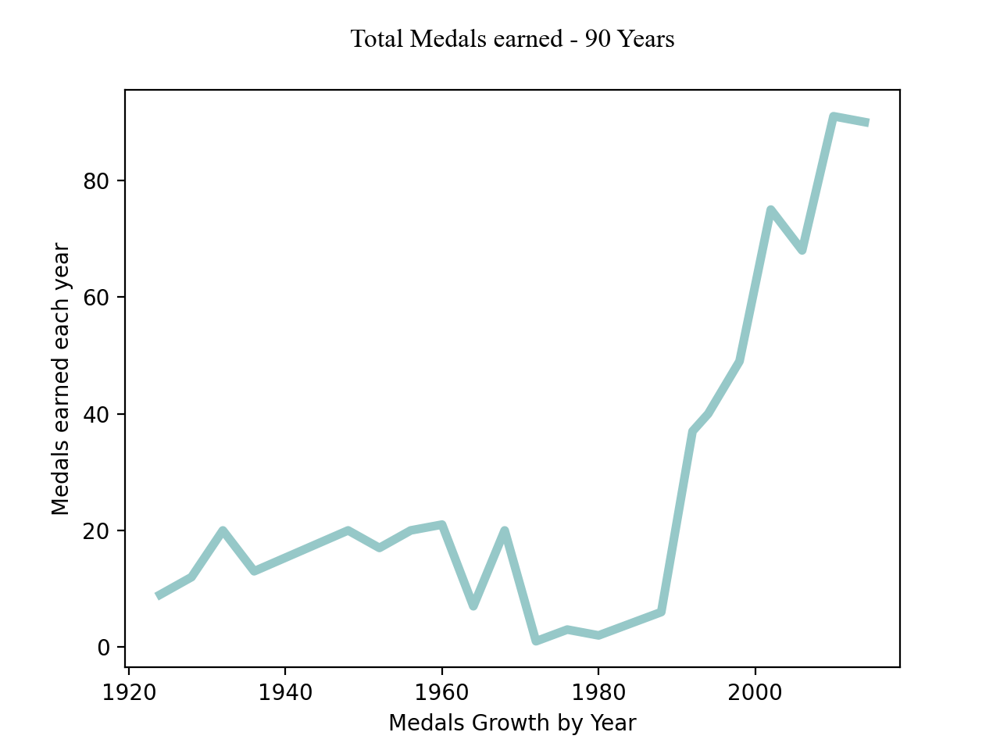
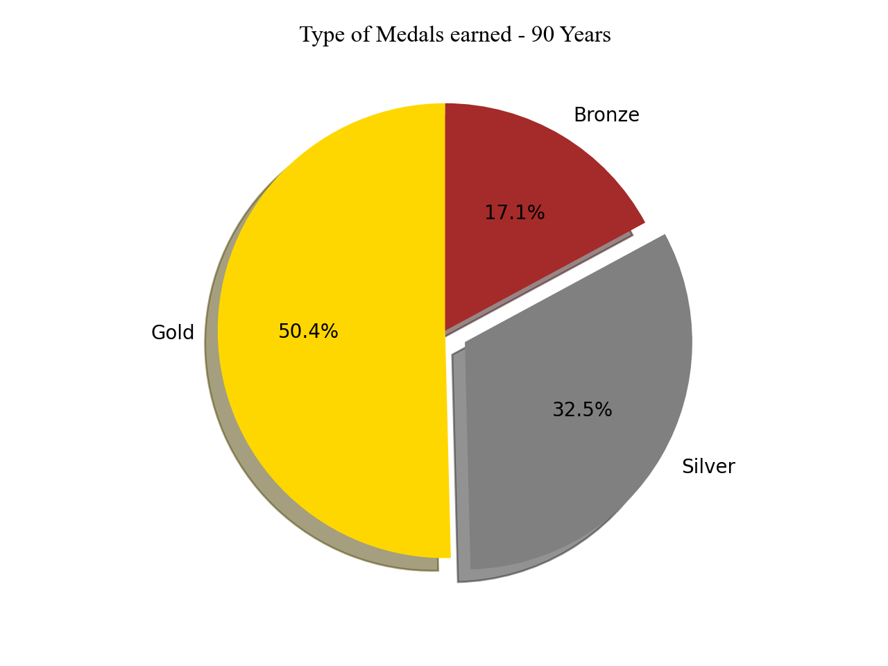
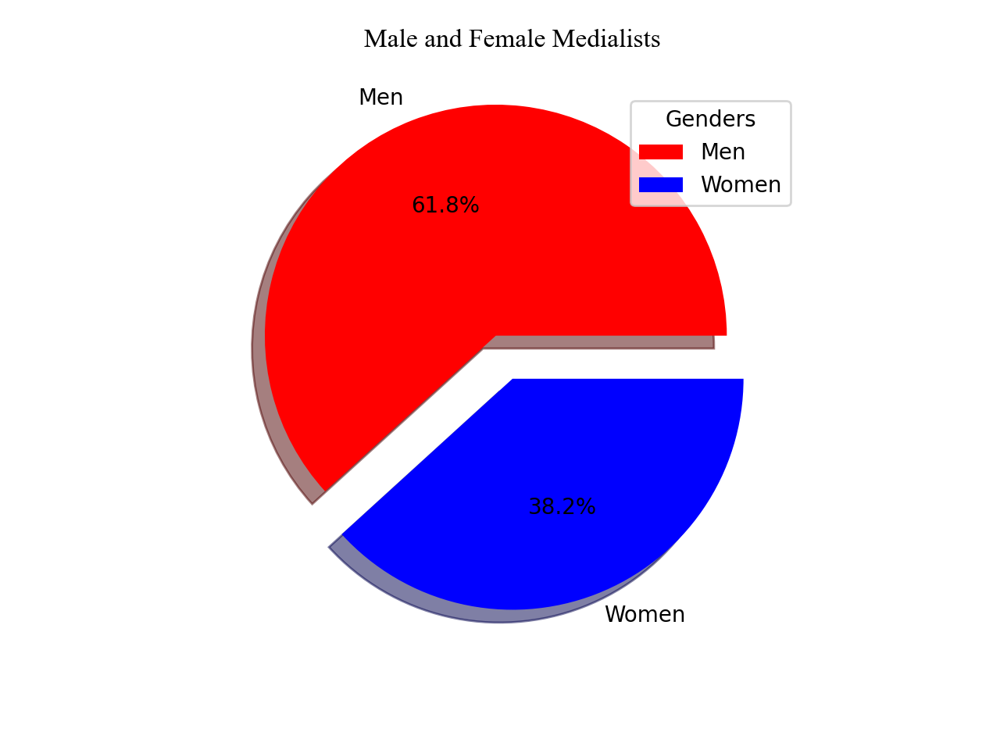
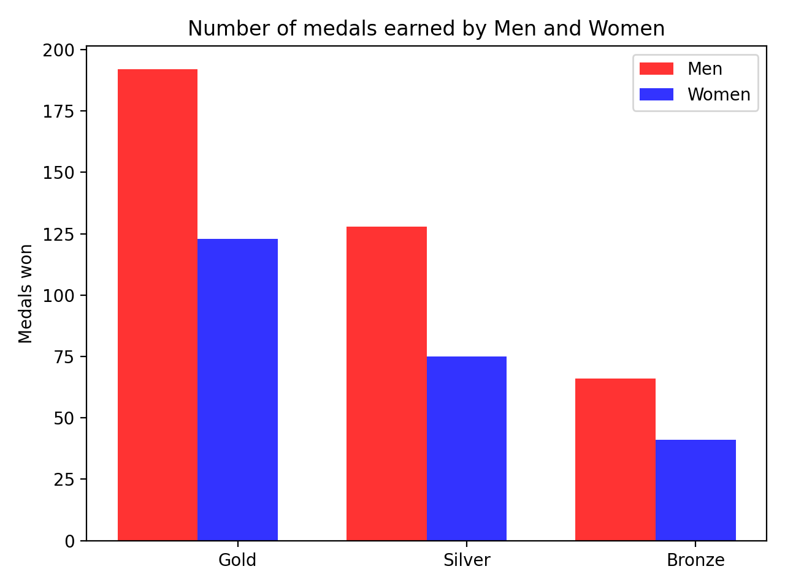
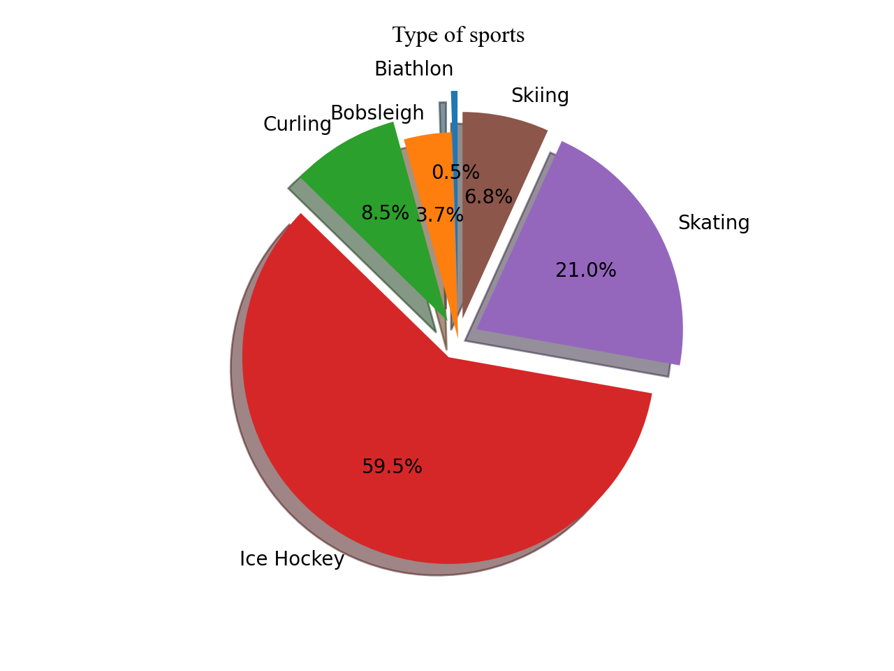
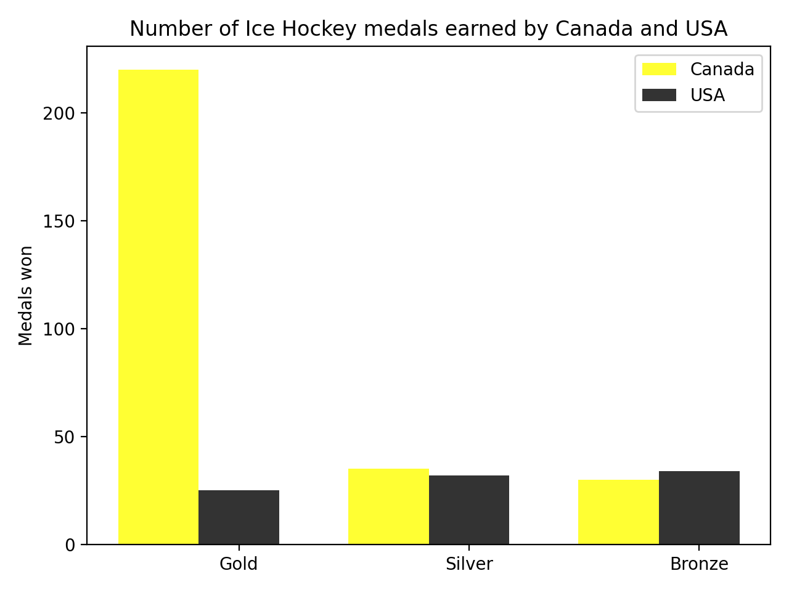

Canada Olympic Data Analysis
Data Point 1
Overal Performance
Canada now holding the most number of medals through out the years from 1924 to 2014 and still holding the 2nd rank all around the world. They have won many medal and keep thriving after years. the trends display an overall increase in the number of medal we won each year
Especially we reach the peak of sport when thriving significantly in the year of 1990 till 2010
During the past 90 years, Canada has proven out power by obtain many gold medal on different kind of sports. We also won more Silver medal than Bronze and the number of silver even out number the number of bronze medal. Canadian athletics are the best!
Medal and gold Medal took the half of the total medal
Data Point 3
We are equals to brings glory to Canada
From the chart we featuring the unbalance distribution of genders are unequals, when the number of male medalists are more than half of the number of female. Still it will be a motivation for women athletics to try harder to balance the it because people of all gender should be equals.
Data Point 4
Different kind of sports
Following to the chart, Canada are the grand champion of Ice Hockey and we still thriving better each year. Thanks to the snowy weather conditions, Ice Hockey has become like a National Sport and we killing it!.
Not only ice Hockey, We also have a significant number of good Skater and Curler which also brings many honourable medals to Canada. We're also the strongest country in Ice Hockey nationwide team.
Especially in Hockey when we compare it with our 1st rival USA, They cannot out bea us at the number of medals that we earned from Ice Hockey which proven more of the unbeatable history of Canadian Ice Hockey player